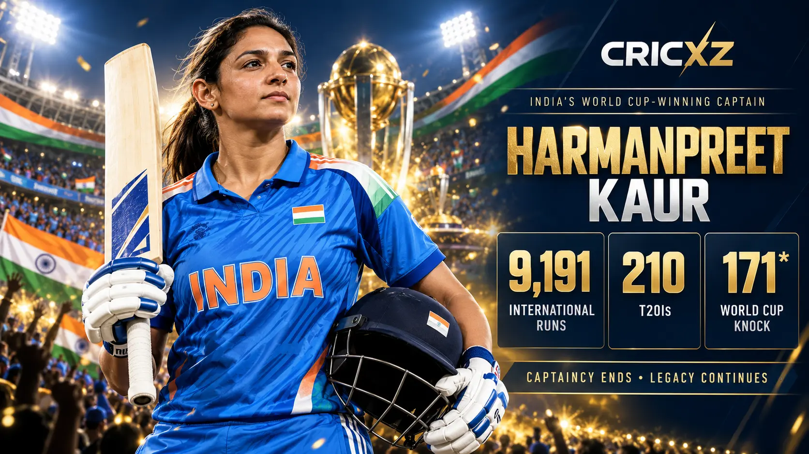
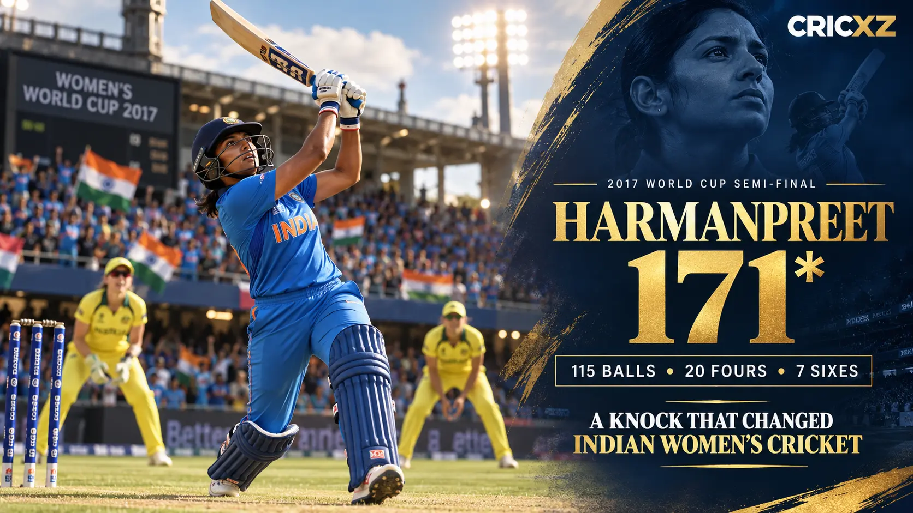

Test Career
- Matches
- 8
- Innings
- 13
- Runs
- 304
- Batting average
- 25.33
- Highest score
- 69
- Hundreds / Fifties
- 0 / 2
- Wickets
- 12
- Best bowling
- 5/44

Harmanpreet Kaur has scored 9,191 international runs and became the first cricketer to play 200 T20 internationals. She led India to the 2025 Women's ODI World Cup and produced the iconic unbeaten 171 in the 2017 World Cup semi-final.
Career statistics are current through 6 October 2026.
Harmanpreet remains an active international player, so these figures may change after her next appearance. The snapshot was checked against current statistical profiles and recent match records.
Across Tests, ODIs and T20Is, Harmanpreet has scored 9,191 runs and taken 75 wickets. Her power hitting, ability to control an innings and long record of leadership have made her one of the defining players in the development of Indian women's cricket.

Harmanpreet struck an unbeaten 171 from 115 balls against Australia in the 2017 Women's World Cup semi-final at Derby. Her innings included 20 fours and seven sixes, carrying India to 281/4 in a rain-reduced 42-over match.
India won by 36 runs and reached the final. The innings remains one of the great World Cup knockout performances and became a landmark moment in the growth of women's cricket in India.
Harmanpreet captained India to their first Women's ODI World Cup title in 2025. She also led the national side to two Asian Games gold medals and multiple Women's T20 Asia Cup titles.
On 6 October 2026, she stepped down as India Women's captain across all formats while confirming that she intends to continue playing for the country. She finished her captaincy tenure after leading India in five Tests, 51 ODIs and 155 T20Is.
13 August 2014 – 10 July 2026
Made her Test debut against England at Wormsley. Her latest Test appearance in this snapshot was also against England, at Lord's.
7 March 2009 – 1 March 2026
Debuted against Pakistan during the 2009 World Cup. Her latest ODI appearance in this snapshot was against Australia.
11 June 2009 – 22 September 2026
Debuted against England at Taunton and became the first player in cricket history to reach 200 T20 internationals.
More than 9,000 runs across Tests, ODIs and T20 internationals.
Produced a 115-ball masterpiece against Australia in the 2017 semi-final.
Became the first cricketer, male or female, to reach 200 T20 international appearances.
Became the first Indian woman to score a T20I century in 2018.
Holds the record for the most runs in Women's ODI World Cup knockout matches.
Led India in more T20 internationals than any previous international captain.
Captained India to the country's first senior women's World Cup title.
Led India to Asian Games cricket gold in 2022 and 2026.
Led Mumbai Indians to two Women's Premier League championships.
Received India's national sporting honour after her breakthrough World Cup campaign.
Became the first Indian woman named among Wisden's five Cricketers of the Year.
Received India's fourth-highest civilian honour for her contribution to cricket.
Read how India Women won a record eighth Asia Cup title, revisit their 147-run Asian Games gold-medal victory, or browse all CricXZ player profiles.